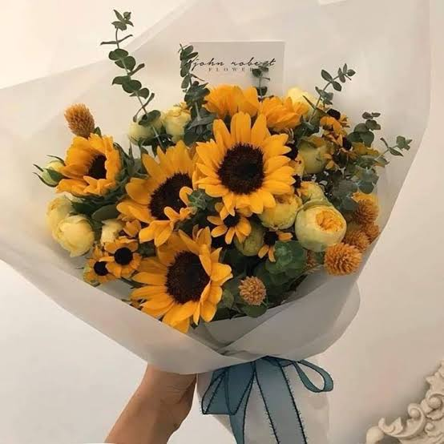

una pequeña sorpresa para ti
Que nunca te falten
motivos para sonreír.
Hoy el cielo decidió llover flores, porque alguien tan especial como tú merece que el día se ponga bonito.
Con cariño, para hacerte el día un poquito más amarillo ♥
✦
✧
·

nota del día
“Las flores amarillas no duran para siempre,
pero el cariño con que se entregan sí.”
Tu ramo está listo para florecer ✿